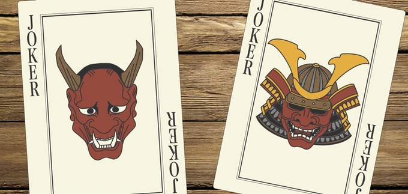
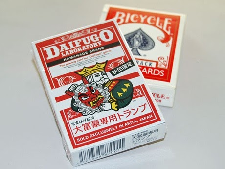
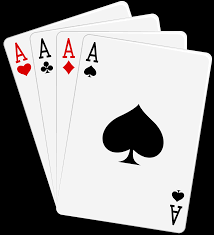

Daifugō (大富豪 - very rich man
) or Daihinmin (大貧民 - Grand Pauper
), also known as Tycoon, is a Japanese shedding-type card game for three or more players played with a standard 52-card pack. The game is very similar to Western card games like President.
It became popular throughout Japan in the 1980's and 1990's, and during this time numerous additional rules and variations were introduced. The basic game will be described first, followed by a selection of variants.
From a Tycoon player's review:
This game was incredibly fun over snacks and soda, brought us so many laughs, and frequently ended our friendships because we were always cheating. 
The objective of the game is to get rid of all the cards one has as fast as possible by playing progressively stronger cards than those of the previous player. The winner is the Tycoon earning various advantages in the next round, and the last person is called the Beggar.
Daifugō is usually played by from 3 to 6 players. A standard 52 card pack is used, to which one joker is normally added, so that there are 53 cards in all. The rank of the cards from high to low is: Joker-2-A-K-Q-J-10-9-8-7-6-5-4-3.
Deal and play are clockwise. Any player may deal the first hand. After the first hand, the loser of each hand deals the next. All the cards are dealt out one at a time as equally as possible to the players. Some players will have one card more than others - this does not matter.
Each game has three rounds:
Each round is organised into turns:
Card strength determines the winner of each turn. A card’s number determines its strength. Each card played must beat the previous one. The weakest card is Three, but the strongest is Two.
| Special cards | Description |
|---|---|
| The Joker card is stronger than a Two and a Three, and can be used as another number in pairs, triples or Revolution sets. |
| The Three of Spades can beat a Joker. |
| Playing an Eight will force the turn to end. The player who played the Eight will get to start the next turn. |
|  | Playing four of the same card triggers a “Revolution”, reversing the value of all cards (ie. Two is now the lowest card and Three is the highest) until the end of the round or when someone plays another Revolution. |
In the first round, everyone begins as a Commoner. Special titles are distributed based on the order of players who get rid of their cards in a round.